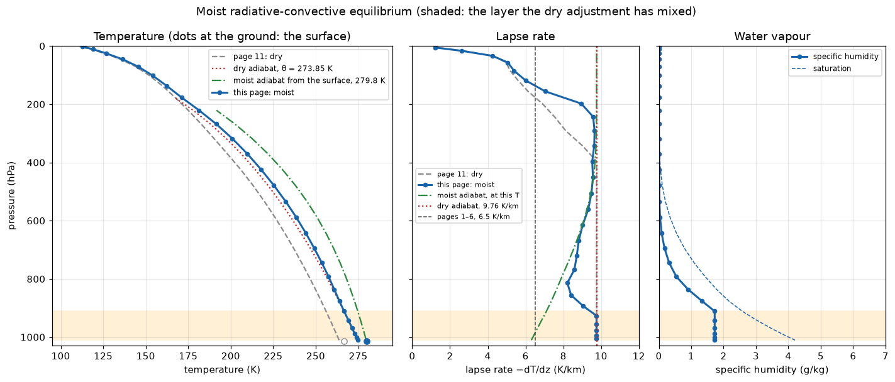

Moist RCE
Chapter 12 of the notes, and a little beyond. Page 11 ran radiation, a slab surface, a boundary layer and dry convective adjustment until nothing changed. The column made its own lapse rate, 9.76 K km⁻¹, not the 6.5 K km⁻¹ that pages 1 to 6 assumed. Page 11 ended on a question: what would a rising parcel have to carry to cool more slowly than that? The answer is water vapour. When it condenses it releases latent heat, and the parcel cools less as it rises.
This page puts the water back and asks whether the column comes back to 6.5. It comes back part of the way. Above its boundary layer the column settles onto a moist adiabat, but a colder one than Earth’s, so its lapse rate is not 6.5. The page measures how far it gets, and why.
The water is back
The stack is page 11’s, with three additions. The surface is held saturated at its own temperature every step, by the stepper page 9 introduced, so it evaporates. Two components can take the water out again. EmanuelConvectionPython is a moist convection scheme: it lifts air from near the ground, condenses the vapour that air carries, rains it out and warms the air aloft. GridScaleCondensation, page 9’s sink, removes the vapour wherever a level is supersaturated and releases its latent heat at that level.
The two columns are otherwise the same: the same fourteen-band radiation at 330 ppm of CO₂, the same 240 W m⁻² absorbed at the surface, the same 2 m slab and 5 m s⁻¹ wind. The difference in their surface temperatures, +13.17 K, is the water vapour greenhouse and its feedback, together with everything else the water does to the column, measured as the difference between two models that each found their own equilibrium. Page 6 could only draw that from profiles typed in. The moist column settles at 280 K, 8 K below Earth’s 288 K. Neither number is a validation: this column has no clouds, its air absorbs no sunlight, and its sunlight is a number written in at the surface.
You are perturbing a shipped equilibrium
As on page 11, the column is not spun up here. It was stepped by scripts/generate_tour_equilibria.py: 379 000 steps of 5 minutes, about 1316 simulated days, which would take about seventeen hours in your browser. The file beside this page, _data/rce_moist_equilibrium.npz, is where it ended.
The timestep is 5 minutes, not page 11’s 12 hours, because of Emanuel’s scheme. climt’s own examples all run it at 5 minutes, and the scheme’s internal reference timescale is 300 s. The last cell on this page shows what changes when you step it at 10 minutes.
The first cell builds the component list, loads the equilibrium, and prints the configuration the file carries. It runs in a few seconds. Two lines are new since page 11: the surface humidity, and the TOA imbalance the column settled at.
The surface is at 279.79 K, 13.17 K warmer than page 11’s. The TOA imbalance in the file is −0.44 W m⁻², and the column settled at about −0.45 W m⁻², the mean over the last 60 days of its spin-up. This column never quite balances at the top. Page 11’s dry column does: stepped on from its file, its TOA imbalance averages −0.01 W m⁻² over 30 days (scripts/experiments/tour_page11_measurements.py convection). The budget section below shows which component is responsible, and it is not the one you might guess.
ImplicitTendencyComponent, the third protocol
Page 7 introduced two kinds of component: tendency components, which return rates of change for AdamsBashforth to integrate, and steppers, which return the new state themselves. EmanuelConvectionPython is the third and last kind sympl has, an ImplicitTendencyComponent. It returns tendencies, like a tendency component, but it needs the timestep to compute them, like a stepper, and it keeps a memory between calls, its cloud-base mass flux, in the state.
It goes in the tendency list. The first line of output above shows it there, because the split asks one question, “does it return a state?”, and Emanuel does not. _tour/stepping.py still has exactly two lists, and that is a decision. Running Emanuel as a stepper would mean a third code path, and a special case every later reader has to remember. climt has always run it inside AdamsBashforth, and the column’s results are usable. The budget section below is where you meet the warning this provokes, and the last cell is where you test the decision.
The profile it found
The next cell draws the equilibrium in three panels. The shaded layer is the one the dry adjustment has mixed: its levels share one θ, page 10’s test. The dashed grey profile is page 11’s dry column. The green dash-dotted curve in the left panel is a moist adiabat: the temperature of a saturated parcel that starts at the surface, at the surface’s temperature, and rises, condensing as it goes. It is where the column would sit if latent heat set its profile all the way up. In the middle panel the green curve is the rate such a parcel would cool at, evaluated at each level’s own temperature. The right panel is the water vapour, against the most the air could hold at its temperature.

This is the figure the cell above produces. Live cells need WebAssembly; if your browser blocks it, the static version is here.
The water warmed the whole troposphere, by about 11 K at the ground and 12 K in the middle. It also bent the profile. In the middle panel, the blue line leaves the dotted dry adiabat at the top of the shaded layer, and from about 700 hPa up to 250 hPa it lies on the green one. The next cell measures it.
The layer from 1010 to 911 hPa is on the dry adiabat, at 9.76 K km⁻¹, exactly as page 11’s convecting layer was. It is the boundary layer, mixed by SimpleBoundaryLayer and the dry adjustment, and it is not saturated: its relative humidity runs from 41 % at the bottom to 67 % at the top. Above it, up to 500 hPa, the lapse rate is 8.85 K km⁻¹ in the loaded state, and about the same averaged over 30 days of stepping (scripts/experiments/tour_page12_measurements.py month). Page 11’s dry column has 9.76 K km⁻¹ across the same levels. So the water has relaxed the lapse rate there by about 0.9 K km⁻¹, and from about 700 hPa up it lapses at the moist adiabatic rate for its own temperature, to within 0.3 K km⁻¹ in every layer.
That is the result the page set out to find, with a twist. The column is on a moist adiabat, but not at 6.5 K km⁻¹. The rest of this section says where 6.5 comes from, which moist adiabat this column is on, and what puts it there.
Where 6.5 came from
A rising parcel cools as it expands. If it is dry, it cools at g/c_p, 9.76 K km⁻¹. If it is saturated, every kelvin it cools condenses some vapour, and the latent heat released makes up part of the cooling. It then cools at the moist adiabatic lapse rate,
\[ \Gamma_m = g \, \frac{1 + L_v r_s / (R_d T)}{c_p + L_v^2 r_s \epsilon / (R_d T^2)}, \]
where r_s is the saturation mixing ratio and ε = R_d/R_v. soundings.moist_adiabatic_lapse_rate computes it, with the same constants and the same saturation humidity as GridScaleCondensation. The second term in the denominator is the latent heat, and it depends steeply on temperature, because r_s does. Warm air holds a lot of vapour, so Γ_m is small. Cold air holds almost none, so Γ_m climbs back towards g/c_p.
In this column Γ_m is 6.31 K km⁻¹ at the lowest level, where the air is at 274.7 K. It passes 6.5 K km⁻¹ at 968 hPa, where the air is at 271.3 K, and reaches 9.4 K km⁻¹ by 534 hPa. A single moist adiabat is therefore not one number. What pages 1 to 6 used is an average. A parcel saturated at 284 K at 1000 hPa cools by 6.52 K km⁻¹ on average between 1000 and 500 hPa (tour_page12_measurements.py adiabat). One that starts at this column’s surface, at 279.8 K, averages 7.23 K km⁻¹ up to 500 hPa (the cell above). That is where 6.5 comes from: it is what latent heating does to air saturated at about Earth’s surface temperature, averaged through the lower troposphere. This column is 8 K colder than that, and its moist adiabat is steeper.
Which moist adiabat
The green curve in the left panel starts from the surface, saturated, at the surface’s temperature. The column is not on it: by 500 hPa that parcel is at 240.9 K and the column at 228.1 K. But no air in this column starts out that way. The air at the lowest level is at 274.7 K, 5 K colder than the surface, and at 41 % relative humidity. Lifted, it cools on the dry adiabat until it saturates, near the top of the shaded layer. Start a saturated parcel there, at 911 hPa and the column’s own 266.7 K, and by 500 hPa it is at 230.0 K, 1.9 K warmer than the column. Start it at 836 hPa and it is within 0.8 K. The column is on the moist adiabat that begins at its cloud base, not at its surface.
What puts it there
Three measurements say why. They come from the cells below and from tour_page12_measurements.py, which steps the loaded state on and averages (month, heating and closure).
- Emanuel’s scheme does the raining. Of the 2.56 mm day⁻¹ this column rains, averaged over 30 days, Emanuel’s scheme supplies all but 0.002.
GridScaleCondensationacts only where the air is saturated, near 250 hPa, and heats it by under 0.01 K per day. - The convection has used up the instability. The scheme decides how much air to lift from its parcel’s buoyancy at cloud base. That averages +0.47 K, and the cloud-base mass flux it sustains is 0.047 kg m⁻² s⁻¹, on every call. Lifted from the lowest level, the scheme’s parcel is within 0.2 K of the air around it everywhere from cloud base to 370 hPa, and its positive area is only about 19 J kg⁻¹ (
tour_page12_measurements.py closure). Radiation keeps cooling the troposphere and making it unstable, and convection removes the instability as fast as it appears, which leaves the column on its parcel’s moist adiabat. (The scheme also outputs anatmosphere_convective_available_potential_energy. Despite the name, it is an internal cloud-top sum in kelvin, not CAPE.) - The middle troposphere is dry. Between 792 and 318 hPa the relative humidity is 9 to 42 %. The scheme’s rising air rains out its water, and the slow sinking that compensates for it brings down air that has already lost its vapour. So the column’s temperature follows the saturated parcel, while the air itself is far from saturated.
It was not always so. Until climt’s SimpleBoundaryLayer was changed to diffuse dry static energy (HISTORY.rst), it diffused temperature, and left a stable layer near the ground. Emanuel’s parcel then arrived at cloud base cooler than the air around it, the closure held the mass flux near zero, and GridScaleCondensation did the raining, in place, at whatever level saturated. That column lapsed at about 9.5 K km⁻¹, close to dry. A column that is to be on its moist adiabat has to let the convection scheme do the condensing.
The budgets
The next cell is the first on this page to step the column, and your browser will print a UserWarning from sympl: “Using an ImplicitTendencyComponent in sympl TendencyStepper objects may lead to scientifically invalid results.” This is sympl saying that it cannot check whether an implicitly formulated component, Emanuel’s scheme, is safe inside a multi-stage stepper like AdamsBashforth. It is printed when a cell builds one, and it can appear again in cell 5, which builds another. climt has always run the scheme this way. The last cell on this page is where you check what the warning is worried about. The timestep does matter to Emanuel’s scheme, and at 5 minutes it has mostly stopped mattering.
The next cell steps a copy of the equilibrium for two days, 576 steps. It takes about a minute and a half in a browser. It also wraps the adjustment and the condensation in a small class, Metered, that records the column enthalpy each adds and the heating each applies, step by step. That is how the section after it attributes the TOA imbalance.
The moisture budget closes
Over the two days the column rains 2.56 mm day⁻¹ and evaporates 2.56, a residual of less than 0.01 mm day⁻¹, and over 30 days it is the same (tour_page12_measurements.py month). The rain is steady, too: Emanuel’s scheme rains a little on every step, and one-day means of P − E do not move from +0.002 mm day⁻¹ over the month. At equilibrium the column cannot be storing water, so everything the surface evaporates comes down again. The list of levels where the grid-scale condensation heats is empty: over these two days it heats nowhere by as much as 0.1 K per day.
The surface loses 34.0 W m⁻² as sensible heat and 74.0 W m⁻² as latent heat over the two days, a Bowen ratio of 0.46 (0.46 over 30 days as well). That is page 9’s saturated surface doing what page 9 said it would: most of what the surface loses to the air, it loses as water.
The two ways this column rains report it differently. EmanuelConvectionPython writes convective_precipitation_rate, already a rate in mm day⁻¹. GridScaleCondensation writes precipitation_amount, the water it removed on the step it was called for, in kg m⁻². That is mm of water, over one timestep, so it only becomes a rate once you divide by the step. budgets.precipitation_rate(state, timestep) does that and adds the two, which is why it takes the timestep and budgets.evaporation_rate(state), the latent heat flux over L_v, does not. Pass it the wrong timestep and the grid-scale rain is off by the ratio, with nothing to tell you.
Where the missing half-watt comes from
The column settled at a TOA imbalance of −0.45 W m⁻². It sends 0.45 W m⁻² more to space than it absorbs, and yet it is not cooling. Stepped on for 60 000 more steps, its surface drifts by −0.01 K per 100 days (scripts/experiments/tour_rce_shipped_remeasure.py settle-moist), which takes less than a hundredth of a W m⁻² out of the 2 m slab, not half a watt. So something in the column is adding energy that the budget does not count.
The last line of the cell’s output says where to start. Over the two days, the dry adjustment adds +0.23 W m⁻² of column enthalpy, c_p T + L_v q, and the condensation adds none. The same measurement over five days, applied to every component, gives +0.23 W m⁻² for the adjustment and +0.15 W m⁻² for Emanuel’s scheme, and zero for everything else except the boundary layer, whose 108.06 W m⁻² is exactly the surface’s sensible and latent heat (tour_page12_measurements.py energy). The two sources add up to 0.38 W m⁻², most of the −0.44 at the top; five days is too short to pin the rest.
The adjustment’s share is its bookkeeping. Page 10’s second code exercise met the ingredient: the scheme uses a heat capacity that depends on the moisture. The scheme conserves the enthalpy of moist air, whose heat capacity includes the vapour’s. That is exactly conserved: the same five days show a change of 0.0000 W m⁻² in it. Everything else in the stack, and budgets.column_enthalpy, counts c_p of dry air. In a column of uniform humidity, as on page 10, the two agree. When the scheme mixes moist air near the ground with drier air above, they do not, and in this column the difference is about 0.2 W m⁻², step after step. Emanuel’s +0.15 W m⁻² is its own, and this page does not take it apart. Page 11’s column had no vapour at all, so it balanced at the top.
Metered is a dozen lines, and it works for any stepper: call it, compare the state before and after, keep the difference. The same idea checks a tendency component, by calling it on the state and integrating its tendencies over the column’s mass. It is the cheapest test there is that a component conserves what you think it conserves. A number like the −0.44 W m⁻² at the top is a sum over every component in the stack. Metering them one at a time is how you find out whose it is, instead of guessing.
The knob: CO₂, run offline
rce_moist_2xco2_equilibrium.npz below: the shipped equilibrium with CO₂ doubled to 660 ppm and stepped on until it settled again, by scripts/generate_tour_equilibria.py --moist-2xco2.
Page 11 doubled CO₂ in the browser and watched its column warm: 1000 steps of 12 hours, about two minutes. This column needed 157 800 steps of 5 minutes, about 548 simulated days, to settle again, and at about 0.16 s a step that is about seven hours in a browser. So the experiment was run offline, and ships as a third file. The cell loads it beside the base state, prints what the file says was run, and takes the warming apart with the radiation alone, the way page 11’s exercise took its OLR apart. It does not step anything, and it runs in a few seconds.
The two files differ by +2.10 K at the surface. Stepped on for 60 000 more steps each and averaged over the last 30 000, the base settles at 279.78 K and the doubled state at 281.90 K, +2.12 K (scripts/experiments/tour_rce_shipped_remeasure.py settle-moist). Averaging each over 30 days, as page 11 did, gives +2.10 K. The provenance’s own cross-check, the difference between the two spin-ups’ last 60-day means, is +2.09 K.
+2.12 K per doubling is this column’s climate sensitivity, about 1.8 times page 11’s dry +1.16 K. The rest of the cell’s output says why. Doubling CO₂ cuts the OLR of the moist column by 4.61 W m⁻², a little more than the dry column’s 4.09. To get those watts back, the column warms. Warmer temperatures alone would raise the OLR by 4.18 W m⁻² per kelvin of surface warming. But the warmer air holds more vapour: averaged over 30 days of each state, 20 % more through the boundary layer and 26 to 62 % more above it, up to 640 hPa (tour_page12_measurements.py month; the cell’s right panel shows the same change file to file). The extra vapour on its own lowers the OLR by 1.99 W m⁻² per kelvin. Each kelvin of warming buys only the difference, about 2.2 W m⁻². Had the vapour stayed where it was, the column would have warmed by 1.10 K: close to page 11’s dry answer, and a little below it. The water vapour feedback is the whole difference between the two sensitivities.
The lapse rate changes the way the moist adiabat says it should. Averaged over 30 days, the layers below 500 hPa lapse at 9.17 K km⁻¹ in the base state and 9.09 in the doubled one (tour_page12_measurements.py month), so the upper air warms more than the lower: over the same 30-day means, 2.66 K at the lowest level and 2.83 K at 534 hPa. A warmer moist adiabat is a less steep one, and air that warms more aloft radiates more to space for each kelvin of surface warming. That is the lapse-rate feedback, and it offsets part of the water vapour feedback. It is part of why this column, with its vapour held fixed, would warm a little less than page 11’s dry one, whose convecting layer stays on the dry adiabat whatever its temperature.
Timestep sensitivity, measured
The warning said that sympl cannot check Emanuel’s scheme inside AdamsBashforth. Here is the check. The next cell steps the equilibrium for the same two days as cell 3, at 10 minutes instead of 5, and compares the two. It takes about 45 seconds in a browser: 288 steps, half as many as cell 3, because each is twice as long.
The warning is right that the timestep matters to Emanuel’s scheme. At 10 minutes it rains 2.36 mm day⁻¹ over the two days, against 2.56 at 5. sympl’s warning is generic, and knows nothing of this scheme, but here the step dependence is written into the closure. Each call adds 0.01 × its cloud-base buoyancy to the mass flux, however long the step, and damps the mass flux by a fraction 0.1 × dt/300 s. Double the step and the damping per hour is nearly unchanged, but the push per hour is halved. Over 30 days of a 60-day run the cloud-base mass flux is 0.050, 0.047, 0.038 and 0.030 kg m⁻² s⁻¹ at 2.5, 5, 10 and 20 minutes, and the scheme’s rain 2.56, 2.56, 2.45 and 2.35 mm day⁻¹ (tour_page12_measurements.py timestep). The scheme does all the raining at every step length, so the rain falls with the evaporation, by 4 % from 5 to 10 minutes.
The column notices, a little. Over the same 30 days the surface is at 279.69, 279.79, 279.83 and 280.16 K, and the lapse rate from 792 to 500 hPa is 9.00, 8.99, 8.94 and 8.83 K km⁻¹. At 10 minutes the two days’ mean temperature differs by at most 0.31 K anywhere in the column. From 2.5 to 10 minutes the surface stays within 0.14 K and the lapse rate within 0.06 K km⁻¹; at 20 minutes the surface is 0.37 K warmer than at 5. So 5 minutes, the step climt’s examples use, is inside the range where the answer has stopped moving much, and running Emanuel inside AdamsBashforth at that step is a measured choice, not an assumed one. The TOA residual moves with the step, too, from −0.65 W m⁻² at 2.5 minutes to −0.43 at 5 and about −1 at 10 and 20.
Exercises
Physics
Twice the dry sensitivity: which way would you have guessed? Before you read the knob cell’s output, predict whether the moist column’s warming per doubling should be larger or smaller than page 11’s +1.16 K, and why. Then explain the cell’s last line, the warming with the vapour held fixed. (It is larger. A warmer column holds more vapour, and vapour is a greenhouse gas, so the column has to warm further to get its watts back. With the vapour held fixed it would warm by 1.10 K, a little less than the dry 1.16 K.)
The moist adiabat is not one number. In this column the moist adiabatic rate passes 6.5 K km⁻¹ at 968 hPa. Why there? Use
soundings.moist_adiabatto find the temperature at which a parcel saturated at 1000 hPa averages 6.5 K km⁻¹ between 1000 and 500 hPa. (The rate is set by how much vapour saturated air holds, and that falls by about 7 % for every kelvin of cooling. 6.5 K km⁻¹ is the rate at 271.3 K and 968 hPa. A parcel from 284 K averages 6.52 K km⁻¹, one from 286 K averages 6.19, and one from this column’s 280 K averages 7.15.)
Code
Halve the timestep. Set
DT_LONG = UnytTimeDelta(minutes=2.5)in the last cell and run it again. The cell works out the step count itself, 1152 steps, about three minutes in a browser. Does Emanuel’s rain change much? (A little: over those two days it is 2.64 mm day⁻¹, against 2.56 at 5 minutes, about 3 % more. The surface temperature is within 0.01 K.)Take the grid-scale condensation out. Emanuel’s scheme does all the raining, so does this column need
GridScaleCondensationat all? Step a copy of the equilibrium for ten days without it, and look at the lapse rate above the adjusted layer, the humidity at its top, and the humidity everywhere:no_condensation = [s for s in stepper if s is not condensation] test = copy.deepcopy(state) stepping.integrate(tendency, no_condensation, test, DT, 10 * 288) print(lapse_rate(test)[top:top + 5]) print(soundings.relative_humidity(test)[top]) print(soundings.relative_humidity(test).max())That is 2880 steps, about eight minutes in a browser. (The lapse rates are 9.0, 8.4, 8.2, 8.6 and 8.7 K km⁻¹ and the top of the adjusted layer stays at 67 %, as with the condensation. But the air at 221 hPa, just below the tropopause, reaches 502 % relative humidity. The only level where
GridScaleCondensationdoes anything is the one it is needed at. Left for 300 days without it, the surface ends 0.28 K warmer,tour_page12_measurements.py nogsc.)
Going deeper, and where the tour ends
This is the last page. The column you have now has radiation that sees CO₂ and water vapour, a surface that evaporates, a boundary layer, dry and moist convection and condensation, and it finds its own equilibrium. Several things are deliberately absent:
- No clouds. The water that condenses rains out at once. Nothing reflects sunlight or traps longwave the way a cloud would.
- No shortwave component. Every page from 7 on writes 240 W m⁻² in at the surface, so the air absorbs no sunlight at all. climt has a
CorkShortwaveRadiation, but it has not yet been tested the way this tour’s longwave has, so no page here relies on it. - No sea ice, no land, no latitude. One column, over a 2 m slab of water.
Two things this page found are properties of this stack rather than of the atmosphere. The dry adjustment’s heat capacity and Emanuel’s scheme between them put about 0.4 W m⁻² into the column that the budget does not count. And the column reaches its moist adiabat only because its boundary layer mixes dry static energy, which lets the convection scheme’s closure see the instability. With a boundary layer that mixed temperature instead, the scheme had little to do, grid-scale condensation did the raining, and the lapse rate stayed near the dry adiabat. A column that is to be on its moist adiabat has to let the convection scheme do the condensing.